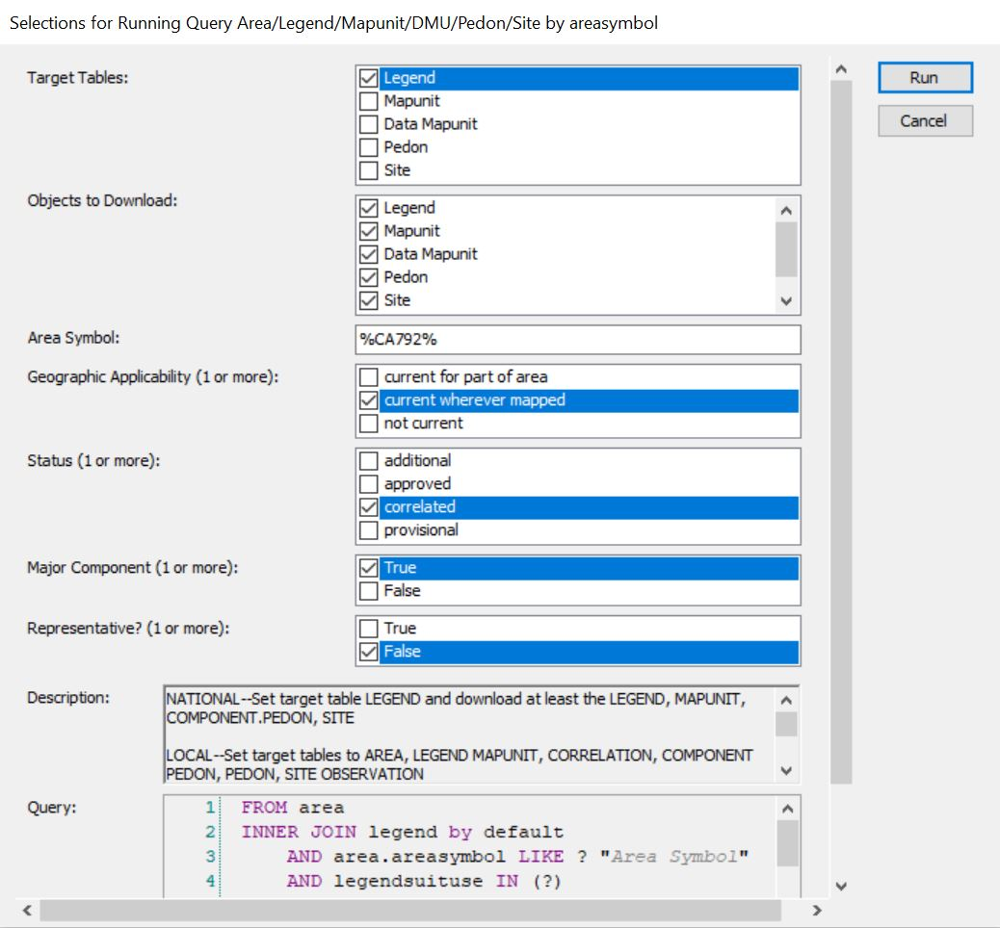

Chapter 2 Mapunits
This section deals with mapunits. Mapunits have limited application for ecological work because they are broad concepts. Mapunits frequently contain multiple components, each occurring on different parts of the landscape and having different soil properties. Ecosites are correlated to components rather than mapunits because of the variability of mapunits. It should be noted that mapunits are spatially delineated, though, whereas components are not. Therefore, an attempt to map ecosites would rely heavily on mapunit delineations. An example of this can be seen on Web Soil Survey. Web Soil Survey can be used to map ecosites. These maps use mapunit delineations and show the ecosites that are correlated to the dominant component in that mapunit.
For the purpose of this document, mapunits are primarily used as intermediate steps in different methodologies. For example, some NASIS Reports are particularly useful and require mapunits as input. Therefore, determining what mapunits are in your area of interest is helpful.
The NRCS has four soil mapping products: SSURGO, gSSURGO, STATSGO, and gNATSGO. SSURGO is the most detailed product but is not available in all areas of the country. The resolution of SSURGO data ranges from 1:12,0000 to 1:63,360. gSSURGO is a gridded (rasterized) version of SSURGO - hence the “g” prefix. It covers the same areas as SSURGO but is gridded at a 10-meter cell size. STATSGO is a less detailed product but is available across all parts of the US. The resolution is 1:250,0000 in the continental US, Hawaii, Puerto Rico and the Virgin Islands. In Alaska, the resolution is 1:1,000,000. gNATSGO is a gridded combination of SSURGO and STATSGO. gNATSGO is primarily SSURGO data, but where SSURGO is unavailable, STATSGO is used to fill the gaps. The state-wide geodatabases are 10-meter cell sizes and the CONUS database is a 30-meter cell size.
Data mapunits are the internal structure of mapunits. Data mapunits contain the mapunit component data as well as some information about the data mapunit itself. Over time, changes are sometimes made to data mapunits. Examples include adding a mapunit component to a mapunit, changing the particle size percentages of a mapunit component, or as a result of mapunits being renamed and aggregated as a result of transitioning into MLRA mapunits. When changes are made to a data mapunit, a new data mapunit is created. This new data mapunit becomes the representative data mapunit and the old data mapunit becomes a non-representative data mapunit. By doing this, a historical record of data mapunits is created, that way past versions are not lost. For ecological site work, we are almost always interested in working with representative data mapunits because they are the most up-to-date data available.
2.1 What mapunits are in an MLRA?
If your MLRA uses primarily SSURGO data, the Mapunit in MLRA tool is the best option. It allow you to simply enter your MLRA of interest and define what percent of the total mapunit acreage must be within your MLRA for the mapunit to be considered a member of your MLRA of interest.
Note that this tool will make two groups of mapunits if there are more than 2,100 mapunits. This happens because most NASIS queries do not allow for more than 2,100 mapunits to be included in a query.
Why not use a NASIS Query that queries components by MLRA, like NASIS > Queries > NSSC Pangaea > Area/Legend/Mapunit/DMU by MLRA? Unfortunately, this is not the most reliable way to determine what mapunits are in an MLRA. Mapunits are assigned to an MLRA via the mapunit area overlap table. These tables are not perfectly populated. Some mapunits are not assigned to an MLRA and others could be assigned to multiple MLRAs. For this reason, using a spatial intersection, as is done in the ‘Mapunit in MLRA tool’ is the preferred approach. Components are assigned from the same mapunit area overlap tables and therefore suffer from imperfect population of mapunit overlap tables also. Components
2.2 What mapunits are in a Soil Survey Area?
Queries by Soil Survey Area are much more reliable than queries by MLRA. As previously mentioned, queries by MLRA are not ideal because the mapunit overlap tables are imperfectly populated. The Soil Survey area corresponds to the legend, and this means that components are reliably associated with Soil Survey Areas. Therefore, let’s use the following: NASIS > Query > NSSC Pangaea > Area/Legend/Mapunit/DMU/Pedon/Site/ by areasymbol.
Run against National 
Run against Local

Acquire component names and IDs using R.
Load the soilDB package and fetch NASIS data
library(soilDB)
my.mapunits.SSA <- fetchNASIS(from = "components", duplicates = T)## Warning: Horizon top depths contain NA! Check depth logic with
## aqp::checkHzDepthLogic()## Warning: Horizon bottom depths contain NA! Check depth logic with
## aqp::checkHzDepthLogic()## Warning in `hzidname<-`(`*tmp*`, value = "chiid"): horizon ID name (chiid) not
## unique. unique ID not changed.Look at the mapunits - the head() function shows just the first six records. Remove the head() function to see all the component names
head(my.mapunits.SSA$muname)## [1] "Water"
## [2] "Rock outcrop, granitic crags-Typic Cryorthents complex, 30 to 100 percent slopes"
## [3] "Rock outcrop, granitic crags-Typic Cryorthents complex, 30 to 100 percent slopes"
## [4] "Rock outcrop, granitic crags-Typic Cryorthents complex, 30 to 100 percent slopes"
## [5] "Rock outcrop, metamorphic crags-Typic Cryorthents, metamorphic complex, 30 to 90 percent slopes"
## [6] "Rock outcrop, metamorphic crags-Typic Cryorthents, metamorphic complex, 30 to 90 percent slopes"Look at the mapunit keys
head(my.mapunits.SSA$mukey)## [1] 2766840 2766852 2766852 2766852 2766853 2766853